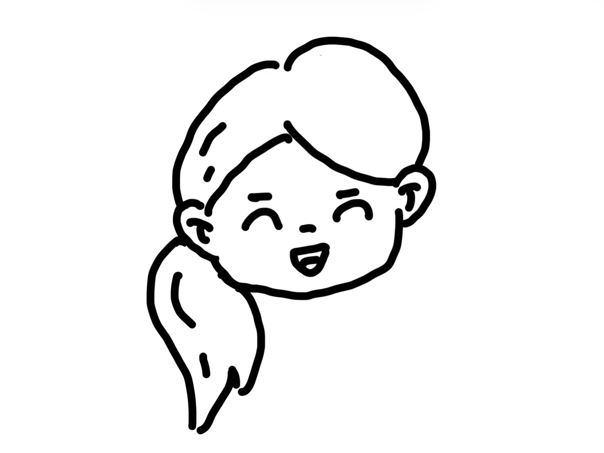
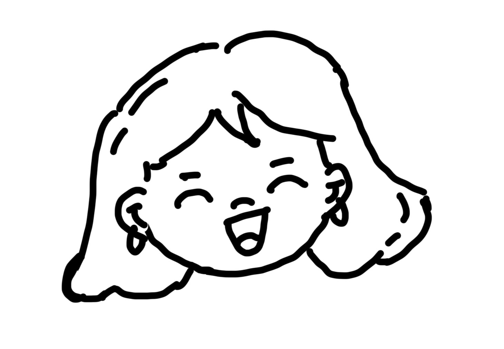
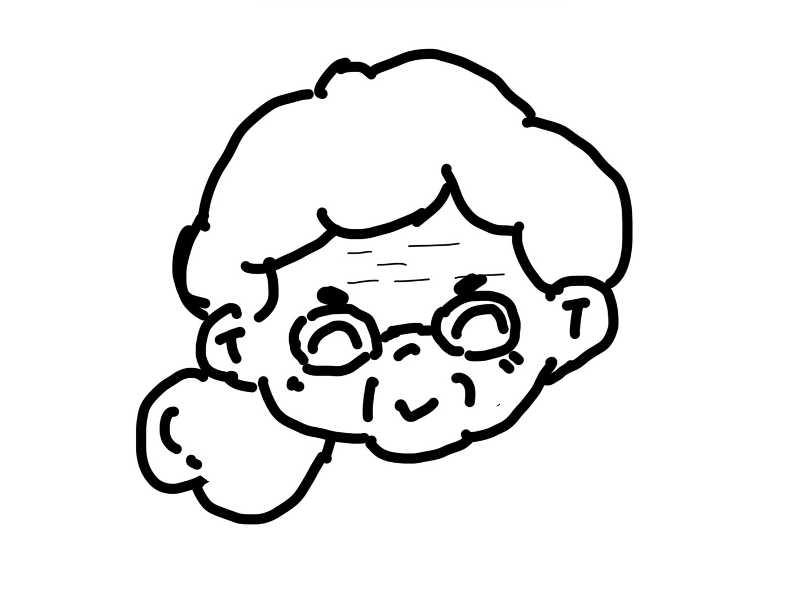

"I used to think this was just 'their' secret, having nothing to do with me. Until that phone call broke the silence, and I saw the chasm between us—not the virus, but the unspeakable shame."
我试图搭建一座桥。不只是为了跨越偏见，更是为了以一个同盟者的身份，抵达真实的彼此。
I am trying to build a bridge. Not just to span prejudice, but to reach the authentic "us" as an ally.
跨越国界的故事Stories Across Borders

艾米莉的故事Emily's Story
纽约 · 设计师New York · Designer

琳达的故事Linda's Story
伦敦 · 项目经理London · Project Manager

桂花婶的故事Aunt Guihua's Story
云南山村 · 留守妇女Yunnan Village · Stay-at-home Woman
艾米莉的心路历程
Emily's Emotional Journey
确诊后的自我怀疑Self-doubt after diagnosis
知识带来的解放Liberation through knowledge
成为健康倡导者Becoming a health advocate
艾米莉 · 24岁 · 纽约设计师Emily · 24 · New York Designer
"我以为我的人生完了，直到数据告诉我：我只是那80%里的一个。""I thought my life was over, until the data told me: I'm just one of the 80%."
她的转变时间线
Her Transformation Timeline
2024年3月
年度体检发现HPV阳性，连续三周失眠，不敢告诉任何人
Annual checkup revealed HPV positive, couldn't sleep for three weeks, didn't dare tell anyone
2024年4月
在网上找到这个项目，第一次知道80%的女性都会感染HPV
Found this project online, first time learning 80% of women get HPV
2024年5月
鼓起勇气告诉男友，他的支持让她重新找回自信
Gathered courage to tell boyfriend, his support restored her confidence
2024年8月至今
成为HPV科普志愿者，用设计专长制作可视化科普材料
Became HPV education volunteer, using design skills to create visual materials
Emily's Late Night Confession: "That night I researched everything and saw one number: 80%. I suddenly realized I wasn't an outlier. That number was like a light, illuminating the dark corners of my heart."
艾米莉：Emily:"确诊后的第一周，我做了三件事：删除了所有社交媒体（怕被算法推荐相关话题）、拒绝了男友的亲密接触、开始写遗嘱。听起来很夸张，但当时的我真的觉得人生结束了。""In the first week after diagnosis, I did three things: deleted all social media (afraid of algorithm recommendations), rejected boyfriend's intimacy, started writing a will. Sounds exaggerated, but I truly felt my life was over."
我：Me:"这正是我想改变的。HPV只是一个病毒的名字，不该成为人生的判决书。""This is exactly what I want to change. HPV is just a virus name, shouldn't be a life sentence."
"后来我发现，最可怕的不是病毒，而是'HPV=不检点'的标签。这个标签让我在淋浴时用力搓洗身体，仿佛能洗掉'污点'。""Later I realized, the scariest thing wasn't the virus, but the label 'HPV = promiscuity'. This label made me scrub my body hard in the shower, as if washing away the 'stain'."
Important Fact: Only persistent infection with high-risk HPV for years may develop into cervical cancer. Most HPV infections (about 90%) are naturally cleared by the immune system within 1-2 years.
数据来源：世界卫生组织《HPV与宫颈癌事实说明》Data Source: WHO Fact Sheet on HPV and Cervical Cancer
"My boyfriend and I completed HPV vaccination together. Now we organize monthly 'Health Creative Workshops', spreading HPV knowledge through art. Recently we designed exclusive educational materials for the LGBTQ+ community."
最近活动：12月15日纽约青年健康艺术展Recent event: Dec 15 New York Youth Health Art Exhibition
年轻女性HPV认知变化（2024年）
Young Women's HPV Awareness Change (2024)
数据来源：基于美国CDC 2024年青年健康调查报告，样本量N=1200Data source: Based on CDC 2024 Youth Health Survey, N=1200
Turning Point: "That day I almost fainted in a meeting. When the doctor told me I was HPV positive, my first reaction was 'How much time will treatment take?' not 'Is this serious?'"
"碎片时间健康管理"方案
"Fragmented Time Health Management" Solution
通勤健康播客
Commute Health Podcast
• 5分钟HPV基础知识
• 5-minute HPV basics
• 午间冥想引导
• Lunchtime meditation guidance
• 筛查准备清单
• Screening preparation checklist
职场妈妈筛查日历
Working Mom Screening Calendar
• 午休筛查诊所地图
• Lunch break screening clinic map
• 周末家庭健康日
• Weekend family health days
• 提醒系统集成
• Reminder system integration
妈妈互助网络
Mom Support Network
• 轮流照看孩子筛查
• Childcare rotation for screening
• 健康便当分享会
• Healthy lunchbox sharing
• 经验分享小组
• Experience sharing groups
忙碌女性的筛查策略Screening Strategies for Busy Women
时间管理技巧：
利用午休时间（许多诊所提供快速筛查服务）
Use lunch breaks (many clinics offer quick screening services)
预约周末或节假日前一天（减少工作影响）
Schedule weekends or before holidays (minimize work impact)
与年度体检合并安排
Combine with annual physical exams
琳达的发现："原来筛查只需要20分钟，比我每天刷社交媒体的时间还少。"
Linda's discovery: "Screening only takes 20 minutes, less time than I spend on social media daily."
"I started 'Healthy Lunch 30 Minutes' at my company, now 23 mom colleagues regularly participate. We also convinced the company to offer flexible screening leave for female employees. My son now reminds me: 'Mom, today is your health day!'"
✓ 工作健康平衡教练✓ Work-life balance coach✓ 企业健康顾问✓ Corporate health consultant
职场女性健康时间投入变化（每周分钟数）
Working Women's Health Time Investment (Weekly Minutes)
数据来源：英国国家统计局2024年时间使用调查，N=850Data source: UK Office for National Statistics 2024 Time Use Survey, N=850
桂花婶的乡村世界
Aunt Guihua's Rural World
云南大理山区Dali Mountain Area, Yunnan
3个孩子的母亲Mother of 3 children
功能手机使用者Feature phone user
桂花婶 · 52岁 · 云南山村留守妇女Aunt Guihua · 52 · Stay-at-home Woman in Yunnan Mountain Village
"我们山里人身体好，不得城里那些花里胡哨的病。""We mountain folks are healthy, don't get those fancy city diseases."
山村女性的日常现实
Daily Reality for Mountain Village Women
就医距离Medical Distance
最近的卫生院：2小时山路 + 1小时班车
Nearest clinic: 2 hours mountain road + 1 hour bus
数字鸿沟Digital Divide
使用儿子淘汰的旧手机，只能打电话
Uses son's old phone, can only make calls
经济考量Financial Consideration
"检查一次要100块，够买半个月米了"
"One checkup costs 100 yuan, enough for half month's rice"
观念障碍Mindset Barrier
"妇科病？那是年轻人才得的，我老了不得这些"
"Gynecological diseases? That's for young people, I'm old, don't get those"
Encounter: "I met Aunt Guihua during a rural medical outreach. She brought her grandson for a cold, I casually asked 'Auntie, have you had a gynecological checkup recently?' She smiled and waved: 'We mountain folks are clean, don't get those diseases.'"
"零数字鸿沟"健康传播方案
"Zero Digital Divide" Health Communication Solution
白族方言健康广播
Bai Dialect Health Broadcast
• 通过村广播站每天播放10分钟
• Broadcast 10 minutes daily through village station
• 用山歌调子唱健康知识
• Sing health knowledge with mountain song tunes
• 邀请本地医生用方言讲解
• Local doctors explain in dialect
图画健康手册
Picture Health Handbook
• 无文字，全图画说明
• No text, all picture explanations
• 防水的塑封设计
• Waterproof laminated design
• 可挂在厨房，每日可见
• Can hang in kitchen, visible daily
流动健康车服务
Mobile Health Van Service
• 每月一次到村里服务
• Monthly village service
• 与赶集日结合
• Combined with market days
• 免费筛查 + 交通补贴
• Free screening + transportation subsidy
关键突破：用农村生活比喻
Key Breakthrough: Using Rural Life Metaphors
"HPV就像地里的杂草，不管水田旱田都会长。筛查就像除草，早发现早拔掉。"
"HPV is like weeds in the field, grow in both paddy and dry fields. Screening is like weeding, find early, remove early."
"宫颈就像米仓的筛子，定期检查筛子有没有破洞。"
"The cervix is like a rice storage sieve, regularly check if the sieve has holes."
城乡健康差距现实Urban-Rural Health Gap Reality
78%
城市女性筛查率
Urban women screening rate
32%
农村女性筛查率
Rural women screening rate
差距原因：地理距离、经济负担、信息获取困难、传统文化观念、数字设备缺乏
Gap reasons: Geographical distance, financial burden, information access difficulty, traditional cultural beliefs, lack of digital devices
选择讲解语言：
Select Explanation Language:
"HPV病毒就像感冒病毒一样常见，大多数女性一生中都会感染。定期筛查可以早期发现问题。"
"HPV virus is as common as cold virus, most women get it in their lifetime. Regular screening can detect problems early."
"HPV病毒阿就像感冒一样平常，我们妇女大半辈子都会着。定期检查就像看田水，早发现早处理。"
"HPV virus is as ordinary as a cold, most of us women get it in our lives. Regular checkup is like checking field water, find early, handle early."
"I'm now the village 'health messenger'. When the mobile health van comes each month, I bring over a dozen older sisters for checkups. We also organized an 'Embroidery Health Group', talking health knowledge while embroidering. My daughter studies at Kunming University, she says she'll write a paper about our experience."
已带动47位山村妇女接受筛查Has brought 47 mountain village women for screening
偏远地区妇女宫颈癌筛查参与率变化
Remote Area Women's Cervical Cancer Screening Participation Rate Change
数据来源：中国疾控中心2024年农村妇女健康调查报告，N=5,800Data source: China CDC 2024 Rural Women Health Survey, N=5,800
叙述者的独白Narrator's Monologue
镜中自我：一个旁观者的觉醒The Man in the Mirror: A Bystander's Awakening
作为男性，我曾以为HPV是“她们”的事。直到故事发生，我才意识到自己一直戴着有色眼镜，站在岸边。As a man, I thought HPV was "their" issue. It wasn't until the story unfolded that I realized I had been standing on the shore, wearing tinted glasses.
I walked into the vaccination room. The moment the needle pierced my skin, I felt a release. It wasn't just medical defense; it was a statement: I care.
This is no longer a story about "them"; it's a story about "us".
The process of creating this website was one of self-fracture and reconstruction. I learned to:
1. Acknowledge my ignorance is not shameful; what is shameful is using ignorance to harm others.
2. Men's absence from conversations about sexual health is a form of privilege in itself. We need to step up and break this silence.
HPV认知自测
HPV Knowledge Quiz
第 1/10 题Question 1/10得分: 0Score: 0
0分points
给她们的话
Share Your Support
留言将匿名展示，精选留言会转达给故事主人公Messages are anonymous. Selected messages will be shared with the women featured.
其他网友的留言
Messages from Others
成为桥梁：行动指南
Becoming a Bridge: Action Guide
如何与身边人谈论HPV
How to Talk About HPV with Others
从事实出发，强调80%女性一生中可能感染HPV
Start with facts: 80% of women will get HPV in their lifetime
区分HPV感染与宫颈癌，消除不必要的恐慌
Distinguish between HPV infection and cervical cancer
分享筛查的重要性，而非道德评判
Focus on screening importance, not moral judgment
如何组织小型健康分享会
Organizing Small Health Sharing Sessions
准备简单易懂的资料（如图表、示意图）
Prepare simple materials (charts, diagrams)
邀请专业人士或经验分享者
Invite healthcare professionals or personal experience sharers